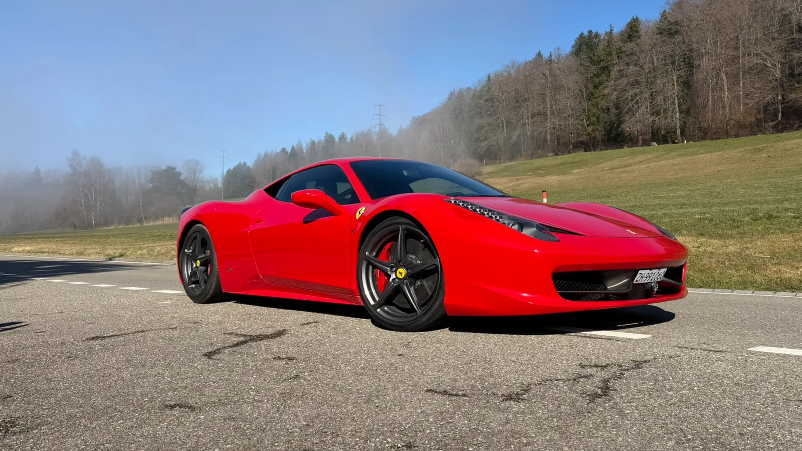
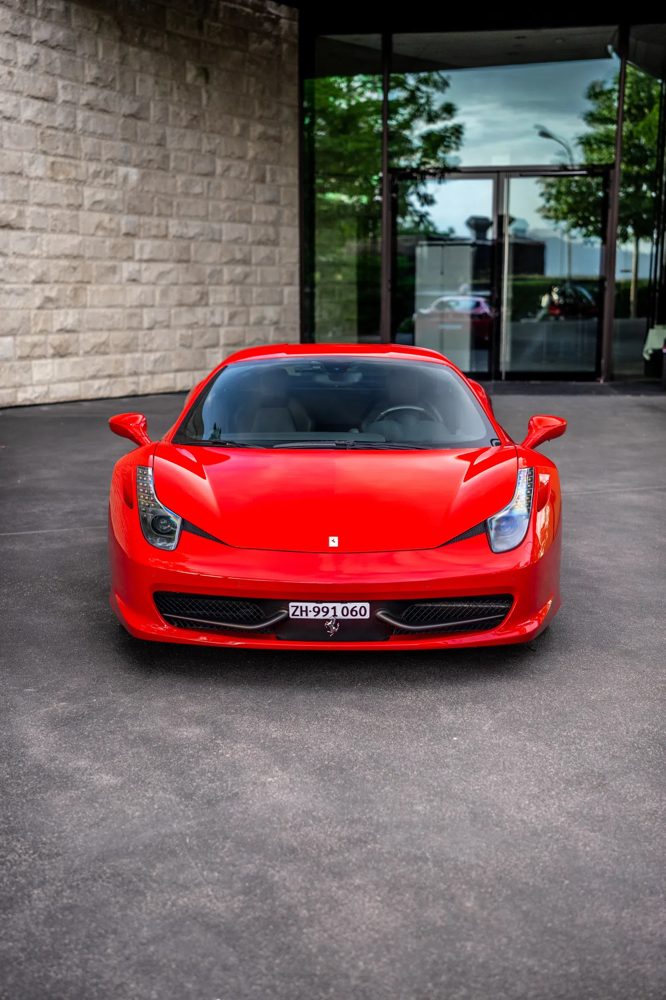

Manche Gäste erleben bei uns zum ersten Mal überhaupt einen Supersportwagen. Diese zwei Freunde kamen mit einem ganz anderen Erfahrungshintergrund. Über die Jahre hatten sie mehrere besondere Performance-Fahrzeuge besessen und gefahren, darunter auch Lamborghinis. Sie kannten extreme Beschleunigung, spektakulären Motorsound und die sehr unterschiedlichen Charaktere verschiedener Marken.
Trotzdem hatte der Ferrari 458 Italia bei beiden immer einen besonderen Platz. Nicht weil er das neueste oder stärkste Auto war, das sie kannten, sondern weil er für eine spezielle Phase der Ferrari-Geschichte steht: Saugmotor, Mittelmotor, kompakte Proportionen und eine unmittelbare Reaktion auf die Eingaben des Fahrers. Der dreistündige Kurztrip sollte zeigen, ob sich der 458 am Steuer noch genauso besonders anfühlt, wie sie es sich lange vorgestellt hatten.
Drei Stunden, bei denen die Strasse wichtiger war als die Uhr
Die Runde ab Nänikon über Maur, Meilen und Pfannenstiel bis zum Dolder Grand in Zürich bot genau die Mischung, die sie gesucht hatten: Landschaft, fliessende Abschnitte, Zürichsee und zwei markante Stopps in der Stadt.

Wer Supersportwagen kennt, achtet stärker auf die Details
Für erfahrene Enthusiasten muss ein Ferrari 458 nichts mit Launch Control oder einer Zahl auf dem Datenblatt beweisen. Interessanter ist alles dazwischen: wie schnell die Lenkung reagiert, wie unmittelbar der Motor auf Gasbefehle anspricht, wie das Getriebe auf die Wippen reagiert und wie sich der Klang des V8 mit steigender Drehzahl verändert.
Genau danach suchten sie. Nach Jahren mit verschiedenen Supercars ging es nicht mehr darum, einfach etwas Neues auszuprobieren. Der 458 faszinierte sie wegen seines Rufs, aussergewöhnlich lebendig und direkt zu wirken. Schon nach den ersten Kilometern wurde klar, warum sich dieser Ruf gehalten hat.
Sie kannten bereits neuere und sehr leistungsstarke Supersportwagen. Beim 458 ging es um etwas anderes: Direktheit, Klang und das Gefühl, dass zwischen Fahrer und Auto möglichst wenig gefiltert wird.
Von Maur nach Meilen. Schnell raus aus dem Zürcher Alltag
Von Nänikon ging es durch Maur in Richtung Meilen. Eine Stärke dieser Route ist, wie schnell sich die Atmosphäre verändert. Dafür braucht es keinen Alpenpass und keinen ganzen Tag: Schon nach kurzer Distanz werden die Strassen grüner, ruhiger und abwechslungsreicher.
Die Strecke Richtung Meilen gab ihnen Zeit, sich auf den Ferrari einzustellen. Der 458 wirkt hinter dem Lenkrad kompakt, die Vorderachse reagiert sofort und der frei saugende V8 macht selbst zurückhaltende Beschleunigung zu einem Ereignis. Auf solchen Strassen entsteht das Erlebnis durch Rhythmus und Präzision, nicht durch extremes Tempo.
Von Meilen zum Pfannenstiel. Der beste Teil der Runde
Der Abschnitt von Meilen in Richtung Pfannenstiel wurde zu ihrem klaren Favoriten. Im Vergleich zu den stärker unterbrochenen Strecken durch Ortschaften wirkt die Strasse offener und verläuft länger in normalen Ausserortsbereichen. Dadurch bleibt mehr Raum für einen sauberen Fahrfluss, ohne die Schweizer Verkehrsregeln auszureizen.
Das passt besonders gut zum 458, weil das Auto schon bei vernünftigem Tempo sehr viel vermittelt. Kleine Steigungswechsel, klare Richtungswechsel und kurze offene Passagen reichen, um Lenkung, Gasannahme und Balance zu spüren. Wer leistungsstarke Autos kennt, findet genau solche Abschnitte oft interessanter als eine einzige lange Gerade.
Das Foto oben entstand auf diesem Teil der Route. Es zeigt auch, warum die Runde optisch so gut funktioniert: Plötzlich steht der Ferrari in offener Landschaft, obwohl Meilen und der Zürichsee nur wenige Minuten entfernt sind.
Die komplette Kurztrip-Route
Die Karte zeigt die Route bewusst auf hoher Ebene: Maur, Meilen und Pfannenstiel, danach die Rückfahrt Richtung Zürich und Dolder. Sie ist so eingestellt, dass Google Maps den tatsächlich gefahrenen Strassen folgt und nicht einfach die schnellste Direktverbindung wählt.
Vom Pfannenstiel zurück nach Zürich
Nach dem Pfannenstiel änderte die Strecke erneut ihren Charakter. Die beiden fuhren zurück nach Zürich und hielten beim Opernhaus. Das Umfeld ist völlig anders als am Pfannenstiel, und genau dieser Kontrast macht eine kurze Route so vollständig: Im selben Mietzeitraum wechselt der 458 von offenen Strassen an den See und danach in eine der bekanntesten urbanen Kulissen Zürichs.
Von dort ging es bergauf zum Dolder Grand. Die Auffahrt brachte vor der Rückkehr nach Nänikon noch einmal einen anderen Rhythmus — engere städtische Strassen, Höhenunterschiede und ein Ziel, zu dem ein Ferrari 458 Italia in Rosso Corsa besonders gut passt.

Warum sie diese Runde als Kurztrip weiterempfehlen
Nach den drei Stunden waren sie vom Ferrari begeistert — aber genauso positiv äusserten sie sich über die gewählte Route. Das ist ein wichtiger Unterschied. Selbst ein grossartiges Auto kann auf einer schlecht geplanten Strecke, im dichten Verkehr oder bei einem zu ambitionierten Zeitplan sein Potenzial kaum zeigen.
Diese Runde funktionierte, weil sie nicht versuchte, aus drei Stunden eine Tagestour zu machen. Maur und Meilen eröffneten den Kurztrip, die Strecke Richtung Pfannenstiel bot den schönsten Fahrfluss und Opernhaus sowie Dolder gaben der Rückfahrt einen besonderen Abschluss. Viel Abwechslung, ohne unnötige Distanz.
Für zwei Fahrer, die über die Jahre bereits mehrere Supersportwagen inklusive Lamborghinis erlebt und besessen hatten, fühlte sich der 458 trotzdem eigenständig an. Ihre langjährige Schwäche für dieses Modell wurde nicht enttäuscht. Im Gegenteil: Gerade auf dieser Route wurde verständlich, warum der 458 so viele Enthusiasten bis heute begeistert — nicht in einem extremen Moment, sondern wenn die Strasse ihm einfach erlaubt zu fliessen.
Einen ähnlichen Kurztrip bei Zürich planen
Für eine kompakte Runde mit Landschaft, Zürichsee und Stadtabschluss ist Maur–Meilen–Pfannenstiel eine starke Option für unseren dreistündigen Kurztrip. Mehr Informationen findest du auch unter Ferrari mieten Zürich, oder du fragst direkt einen passenden Termin an.
Häufige Fragen
Reichen drei Stunden für die Route über Meilen und Pfannenstiel?
Ja, als fokussierter Kurztrip ab Nänikon kann die Runde gut funktionieren. Der Verkehr in Zürich kann die Dauer jedoch verändern, deshalb sollte die Route als flexible Empfehlung und nicht als fixer Zeitplan verstanden werden.
Warum macht der Abschnitt Meilen–Pfannenstiel im Ferrari 458 besonders Spass?
Die Strecke kombiniert Gefälle, Richtungswechsel und offenere Ausserortsabschnitte als die umliegenden Ortszentren. So lassen sich Lenkung, Gasannahme und der frei saugende V8 des 458 geniessen, ohne extremes Tempo zu benötigen.
Kann Luxury Obsession Routen für eine kurze Ferrari Miete empfehlen?
Ja. Wir schlagen Routen passend zu Dauer, Verkehr, Wetter und gewünschter Atmosphäre vor. Bei drei Stunden bevorzugen wir realistische Runden, bei denen genug Zeit bleibt, den Ferrari ohne Stress zu geniessen.